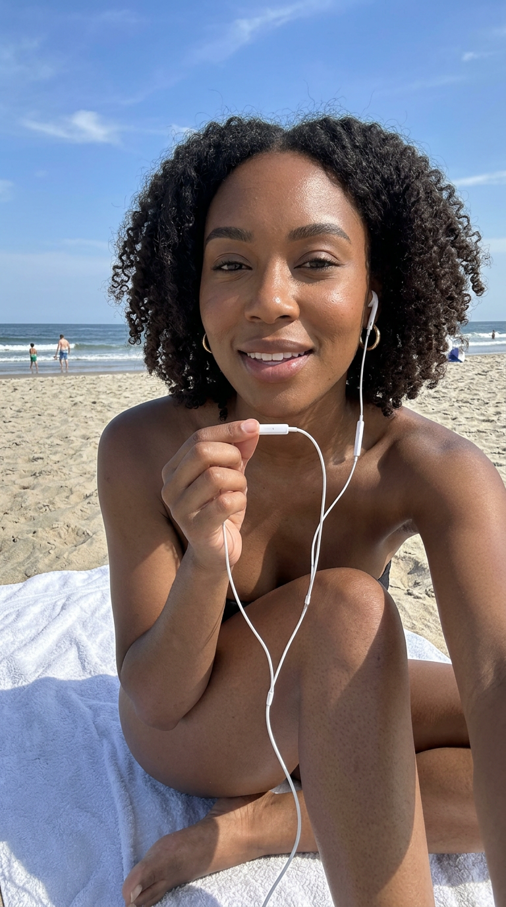
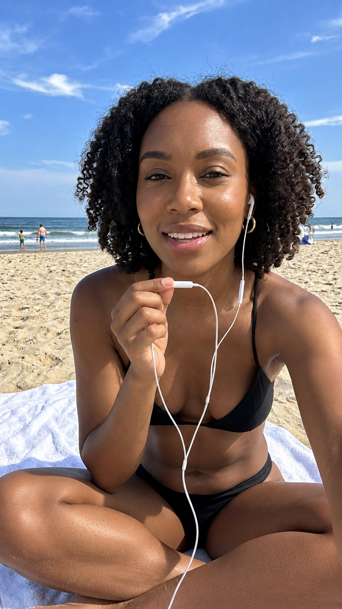
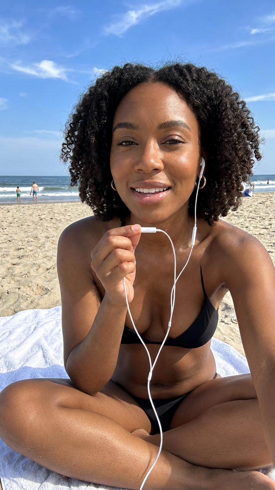
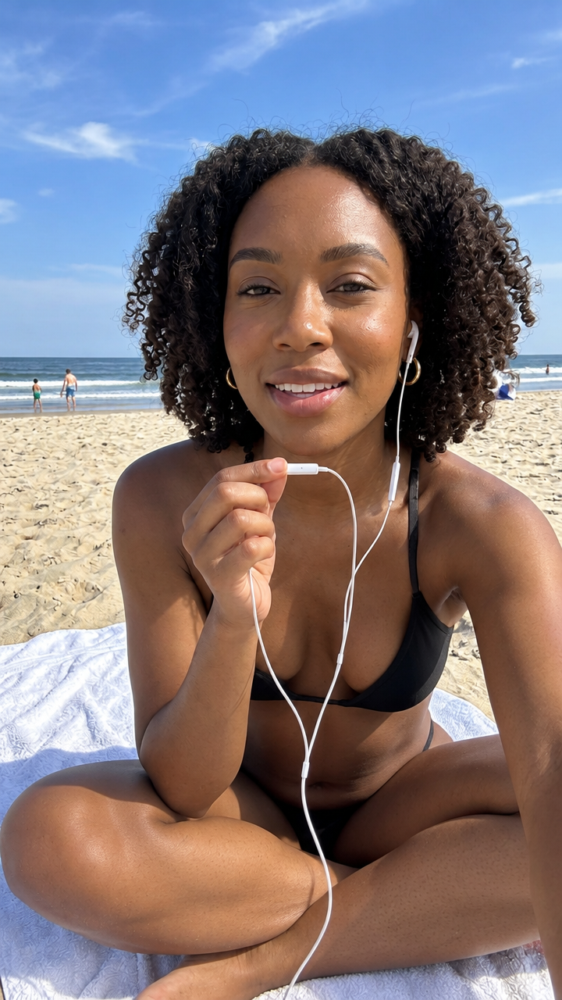
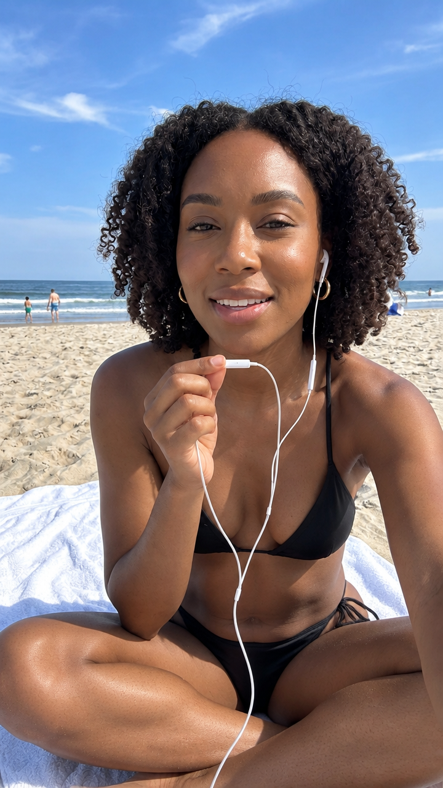
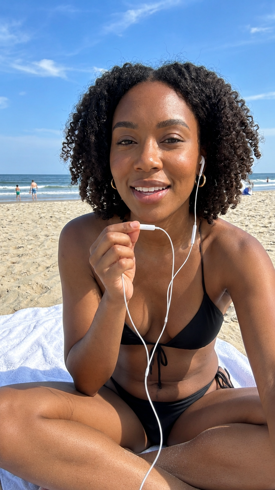
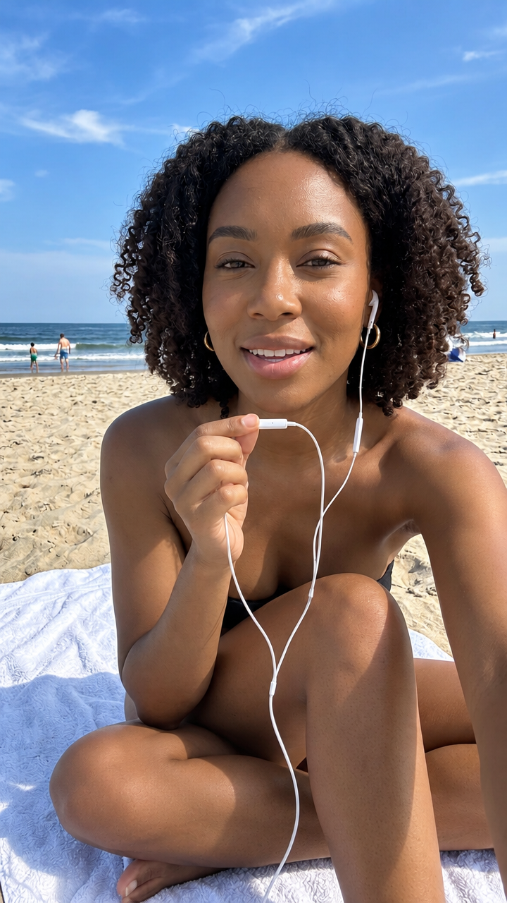
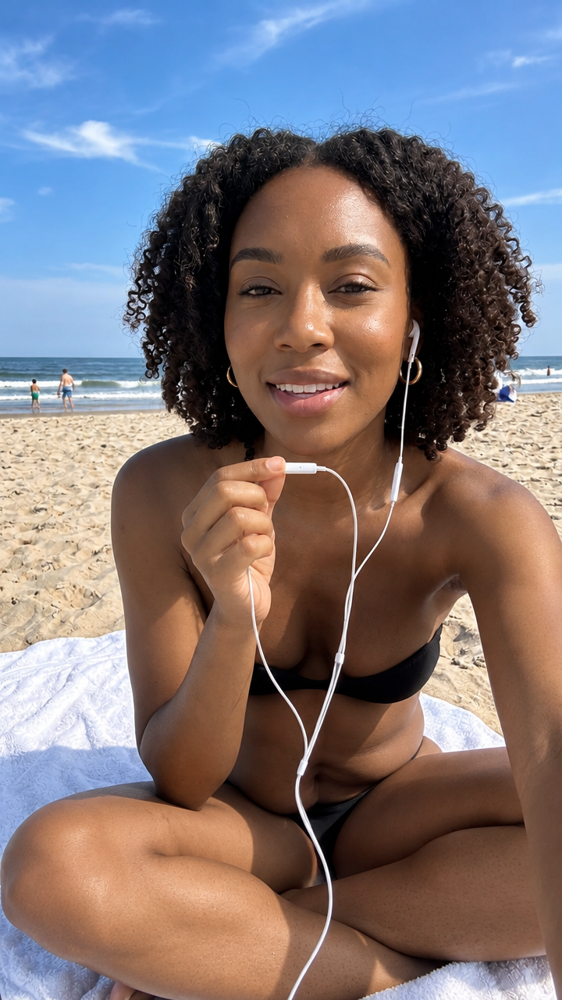
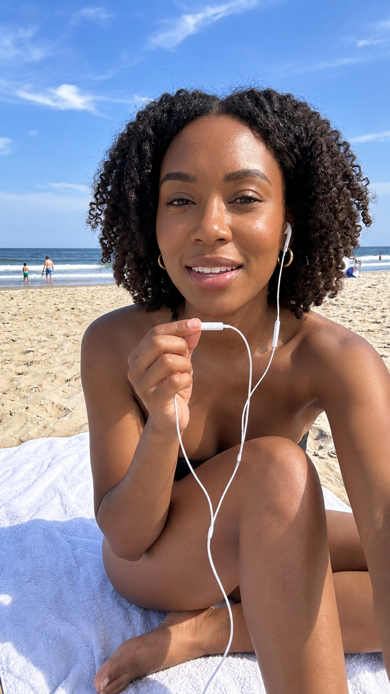

Identity referenced from the frozen Ava seed (ava-01_seed.png).
Lean scene prompt; 0 credits per image under the Pro promo. All files in creative/renders/.
V002-E08 was blocked repeatedly by the GPT-Image moderation layer (PixVerse 500047) and is not rendered.








